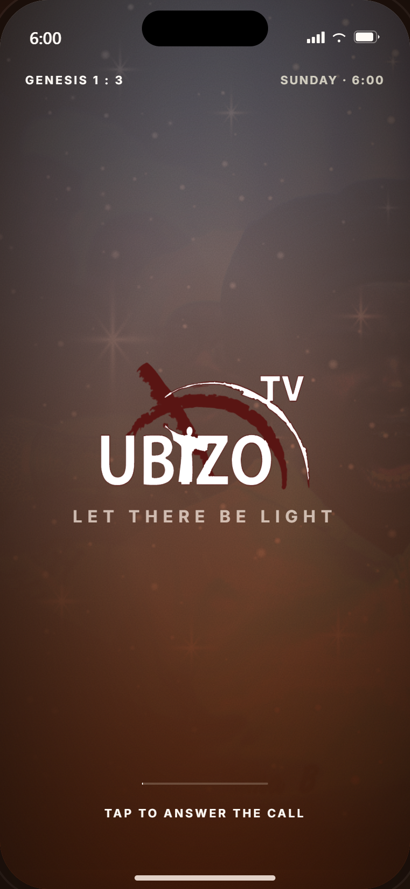
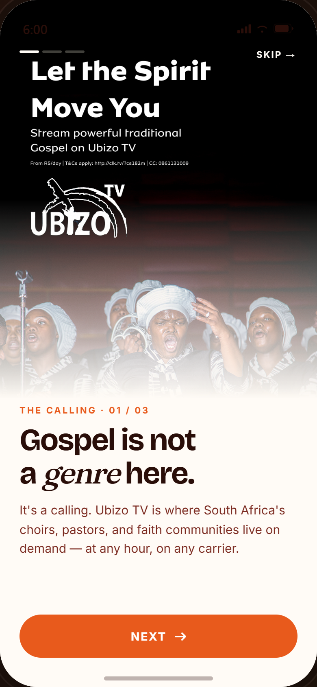
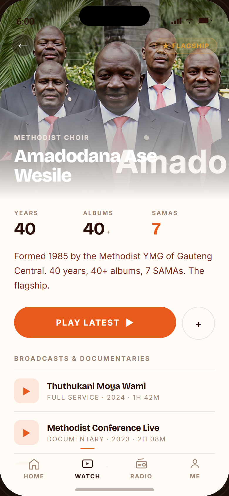
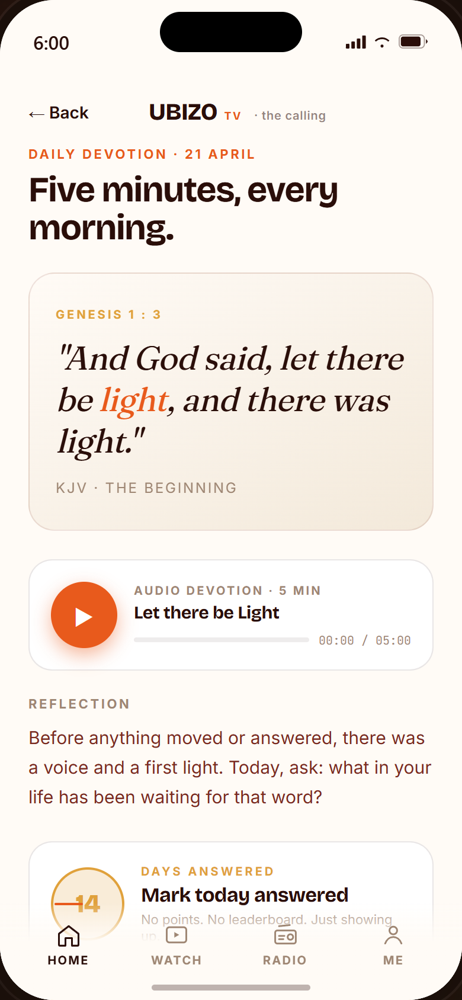

UBIZOTV· The Calling
UX Case Study · 2026
Genesis 1 : 3 · The Calling
Let there be
light.
Ubizo TV — the 24/7 South African gospel network (DSTV 343) — designed as a native streaming product. A six-AM Sunday hi-fi for a community that worships out loud.
UX · UI · Brand
15 screens · 4 flows
Light & Dark
Dominic McWazzer · Solo · Pretoria 2026
01 / 14
UBIZOTV· The Calling
02 · The Problem
The Problem
A gospel TV channel
with no native streaming home.
Channel
DSTV 343
A 24/7 SA-gospel network with a loyal Sunday-morning audience and an Instagram following — but the digital experience stops at YouTube uploads.
Audience
WhatsApp & airtime
The same audience that pays for choir CDs and church-service DVDs. Mobile-first, data-conscious, carrier-billed.
Gap
No product
No live-schedule app. No carrier-billed subscription. No way to keep your Sunday Service in your pocket through the week.
Channel intel · Ubizo TV YouTube · @ubizotv86
02 / 14
UBIZOTV· The Calling
03 · Audience
Audience Insight
Sundays start before sunrise.
From Mamelodi to Mthatha, gospel-led households are awake at 5:30 AM. The TV is on, the kettle's boiling, the WhatsApp group is sharing what time service starts. Any product needs to land in that hour and treat it as the main event — not an afterthought.
06:00 SAST · Sunday Service
Mobile-first · Android dominant
isiZulu · Sesotho · isiXhosa · English
R5/day · R29/wk · airtime
Audience research · Channel watch behaviour · IG comment threads
03 / 14
UBIZOTV· The Calling
04 · Brand North Star
The Calling
A calling,
not a content app.
Ubizo means "the calling" in isiZulu and isiXhosa. The product is built around that word — every screen, button and copyline answers the question: what is being called for here?
Voice
Reverent. Familiar.
Never marketing-speak. Closer to a Sunday-morning host.
Image
Documentary. Real.
Real congregations, real choirs. Never stock or AI.
Tone
Warm dark.
Maroon ink, dawn orange, lit-from-within. Never cold.
Brand north star · self-derived from channel + IG + audience
04 / 14
UBIZOTV· The Calling
05 · Brand System
Visual System
Five tokens, two modes,
one through-line.
Colour
Orange 500#E85A1C · Primary
Gold 500#E0A13B · Restraint accent
Paper 0#FFFBF6 · Cream canvas
Ink 900#1A0F0A · Dark canvas
Display
Bricolage
Bricolage Grotesque · 400 / 700 / 800 — display & UI
Editorial
Fraunces
Fraunces italic · scripture, devotion, reverent moments
UI / Mono
Inter for body
JetBrains Mono · 06:00 · 2,184
Brand system · derived from logo + channel art + IG photography
05 / 14
UBIZOTV· The Calling
06 · Information Architecture
Information Architecture
Four tabs. Fifteen screens. One Sunday.
Tab 01
Home
What's on now. Verse of the day. Continue watching. The greeting.
05 · Home
Tab 02
Watch
Browse by vertical, artists, schedule, full-screen player.
06 / 07 / 08 / 09 / 10
Tab 03
Radio
Audio-only stations. The data-light path for slow signal & long days.
11 · Radio
Tab 04
Me
Carrier subscription, downloads, language, devotion streak.
12 / 13 / 14 / 15
Devotion (13) and Prayer Wall (14) live inside the Home rail — they're rituals, not destinations. Downloads (12) and Me (15) carry the account-side concerns to a single tab so the rest of the app stays content-only.
IA decisions · 4-tab nav driven by audience time-of-day
06 / 14
UBIZOTV· The Calling
07 · Onboarding · Carrier Billing
Flow 01 · Onboard
From the call to the first Sunday.
Four screens, no card form, no email confirmation loop. Pick a carrier, pick a tier, pick how you worship — answer the call.
01
Splash
Dawn gradient · Genesis 1 : 3 · "Tap to answer the call."
02
Welcome
Photography hero · "Gospel is not a genre here."
03
Subscribe
Cell C · MTN · Telkom · R5 / R29 / R99 — billed via airtime.
04
Profile
Language preference · vertical picks · "Enter Ubizo".
Decision
Carrier billing first, account creation last. The audience already pays the carrier — adding a second relationship to a card processor breaks the natural transaction.
Onboarding flow · 4 screens · 0 forms
07 / 14
UBIZOTV· The Calling
08 · Discover & Watch
Flow 02 · Discover & Watch
Three taps to a service.
Home → Browse → Player. Or Home → Schedule → Reminder → Player. Or just Home → "Watch Now" on the live card. Every path collapses to two or three taps.
Browse
4 verticals · Church · Clap & Tap · Documentaries · Music
Artists
13 acts · Amadodana flagship · search by name or sermon
Schedule
7-day grid · live indicator · "Set Reminder"
Player
Full-screen · CC · cast · chapter markers · share
Live · Sunday Service
2,184 watching
SAST · UTC+2
Watch flow · Home / Browse / Artists / Schedule / Player
08 / 14
UBIZOTV· The Calling
09 · Devotion & Community
Flow 03 · Devotion
Five minutes,
before the day starts.
Daily devotion + Prayer Wall sit beside the entertainment. Verse of the day, a 5-minute audio reflection, and an anonymous wall where you can stand with someone — no names, no leaderboard.
Devotion · 13
Days Answered
A streak that resets gently. No points, no shame.
Prayer · 14
Stand With
Anonymous prayer wall. "Amen" is the only counter.
Genesis 1 : 3
"And God said, let there be light, and there was light."
KJV · The beginning
Devotion + community · the rituals that earn the subscription
09 / 14
UBIZOTV· The Calling
10 · Light & Dark
For the day
Cream paper.
For the daylight.
Warm cream, never pure white. Maroon-brown ink. Orange held back for primary actions.
For the morning
Warm dark.
For 6 AM.
Warm near-black, never cool grey. Same orange — now glowing. Gold held back for milestones.
Each screen authored once · tokens resolve per mode
10 / 14
UBIZOTV· The Calling
11 · Selected Screens
Selected Screens
Six of fifteen,
both modes.
The full set lives in the interactive prototype. Here, six that carry the brand most clearly — alternating dark and light to show the system holds in either mode.

01 · Splash · Dark

02 · Welcome · Light

08 · Artist · Light

13 · Devotion · Light
Selected screens · full 15 in the live prototype
11 / 14
UBIZOTV· The Calling
12 · Channel & Snippets
Source Material
The product draws from
what the channel already shows.
Sermons, choirs, services, prayer testimonies — already short-form, already mobile-first, already on Ubizo's feeds. The hi-fi screens, player chrome, and live indicators were designed against this footage so the product feels like a sibling of the channel, not a replacement.
● LIVE
Sunday Service · 06:00
Live broadcast capture
CHOIR
Clap & Tap
Choral performance
DOC
Documentaries
Long-form story segment
MUSIC
Music Videos
Single release moment
Source content · Ubizo TV channel snippets · @ubizotv86
12 / 14
UBIZOTV· The Calling
13 · Decisions & Tradeoffs
Key Decisions
What I'd defend in a review.
01 · Dark first
Sundays start before sunrise
The audience opens the app at 6 AM, in a low-lit kitchen. Light mode is offered, dark is the default.
02 · Carrier billing
No card, no email loop
Cell C / MTN / Telkom direct-bill. Tier choice in seconds. STOP cancels by reply — no funnel.
03 · 4-tab nav
Devotion lives in the rail
Devotion + Prayer aren't tabs — they're rituals. They surface from Home so they feel like a part of waking up, not a separate trip.
04 · Tokens, not screens
Built once, themed twice
Every screen is authored once. ubzTheme(dark) resolves bg / text / surface — Light & Dark are not parallel files.
Decision log · what I'd defend in a UX review
13 / 14
UBIZOTV· The Calling
14 · Outcome
Deliverables
15 screens. 4 flows.
2 modes. 1 calling.
Build
React + JSX
UMD CDN · Babel-standalone · zero build step
Brand
Self-derived
From channel art + IG · own colour, type, voice
Time
Solo · Apr 2026
Brief → brand → flows → hi-fi → prototype
Next
Carrier pitch
Take it to MTN / Cell C as a partnership concept
"Let there be light." — Genesis 1 : 3
Dominic McWazzer · Digital Designer · 2026
14 / 14